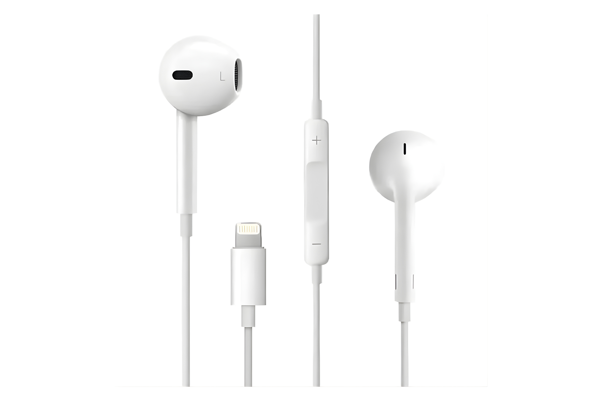
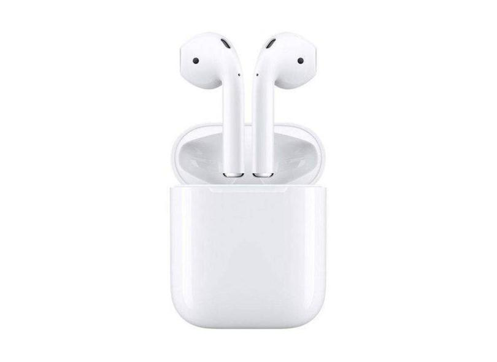
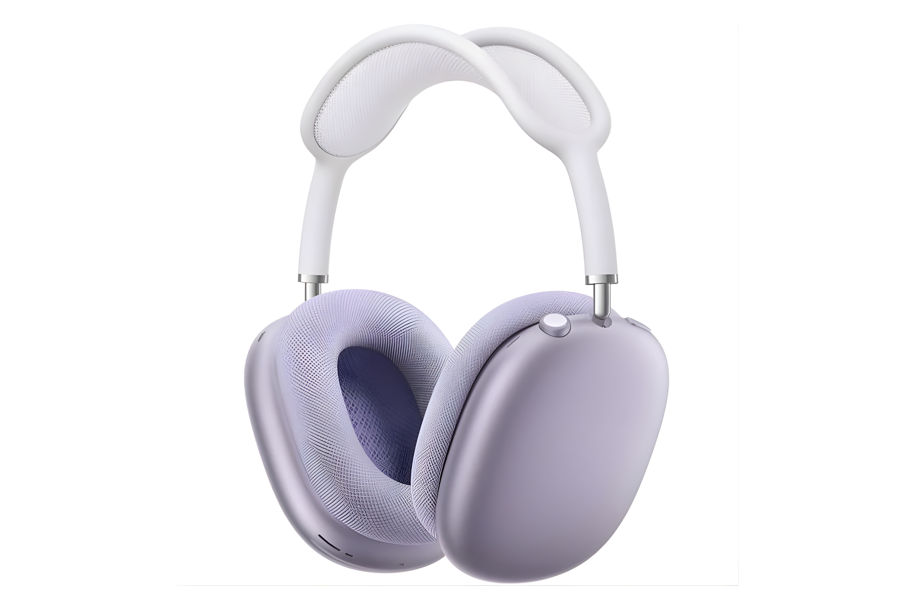

O Apple EarPods com conector Lightning é um fone com fio compatível com iPhone, oferecendo som nítido, microfone integrado e controle de chamadas e volume no cabo.
Compre aqui
Os Apple AirPods (2ª geração) são fones sem fio compactos com conexão rápida ao iPhone, som de qualidade e até cerca de 5 horas de reprodução com uma carga.
Compre aqui
O Apple AirPods Max é um fone premium over-ear com áudio de alta fidelidade, cancelamento ativo de ruído e conforto para longos períodos de uso.
Compre aqui